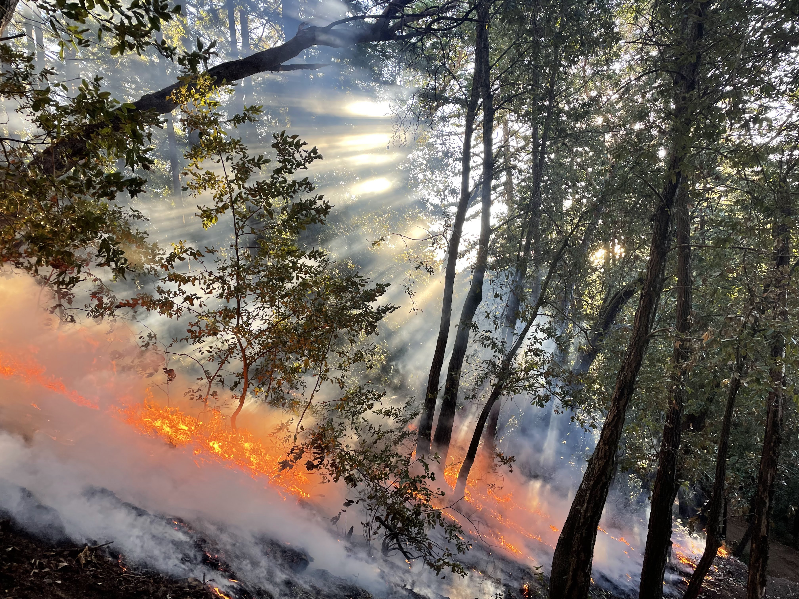
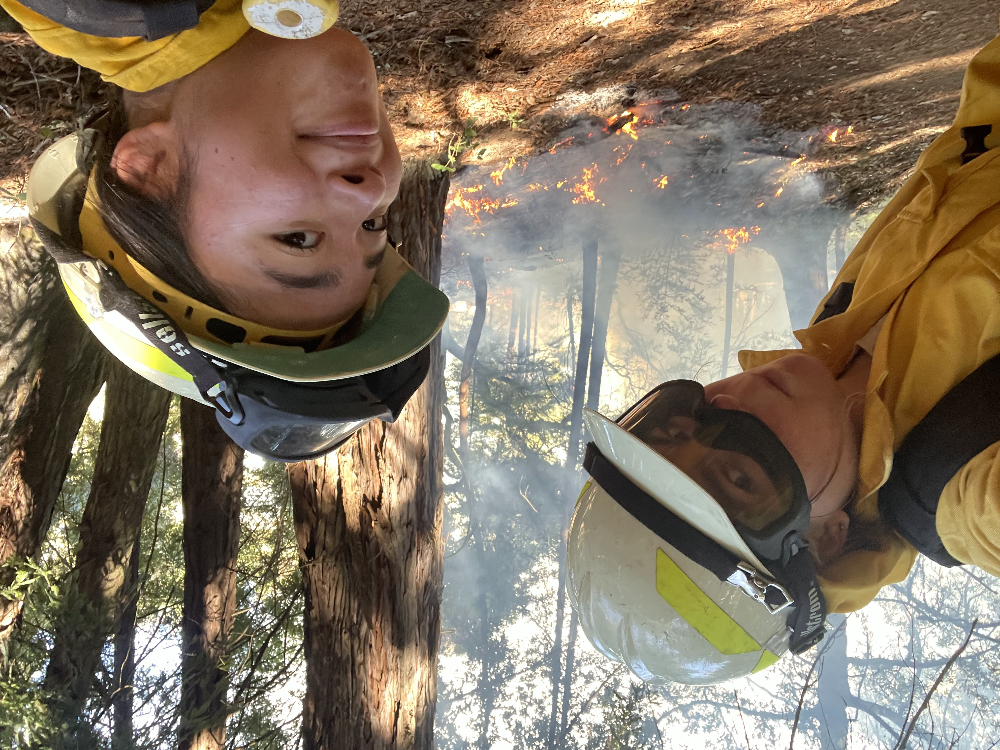
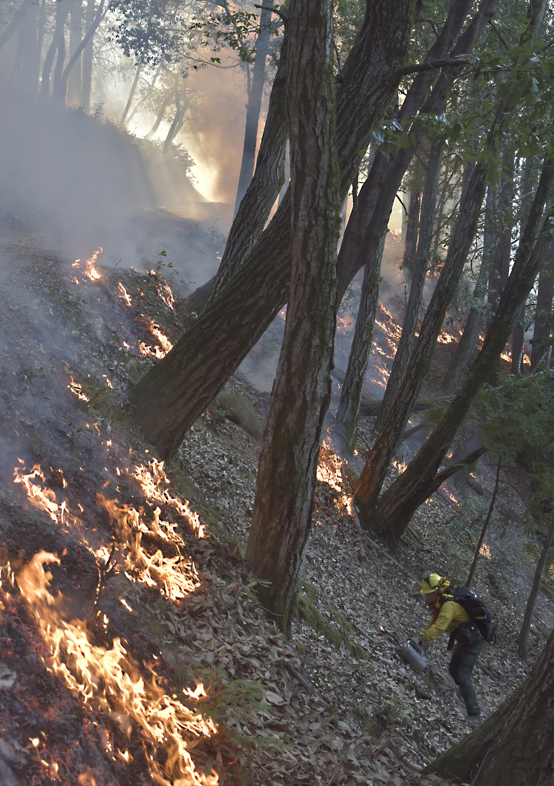
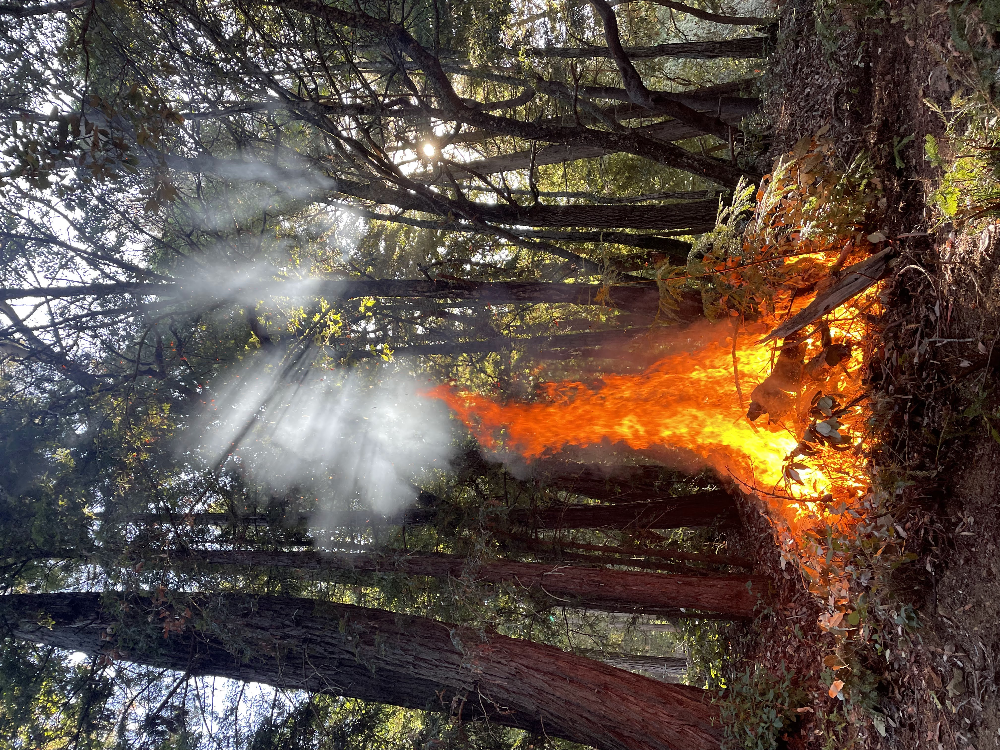
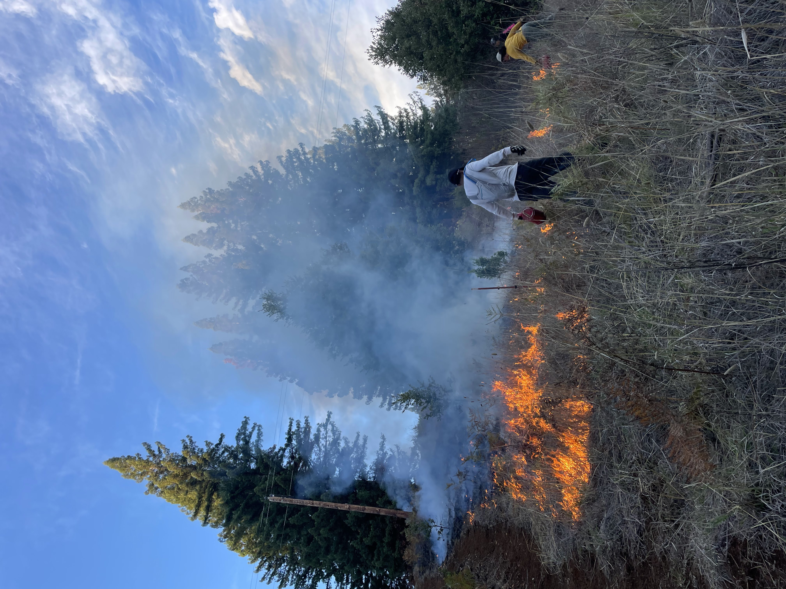
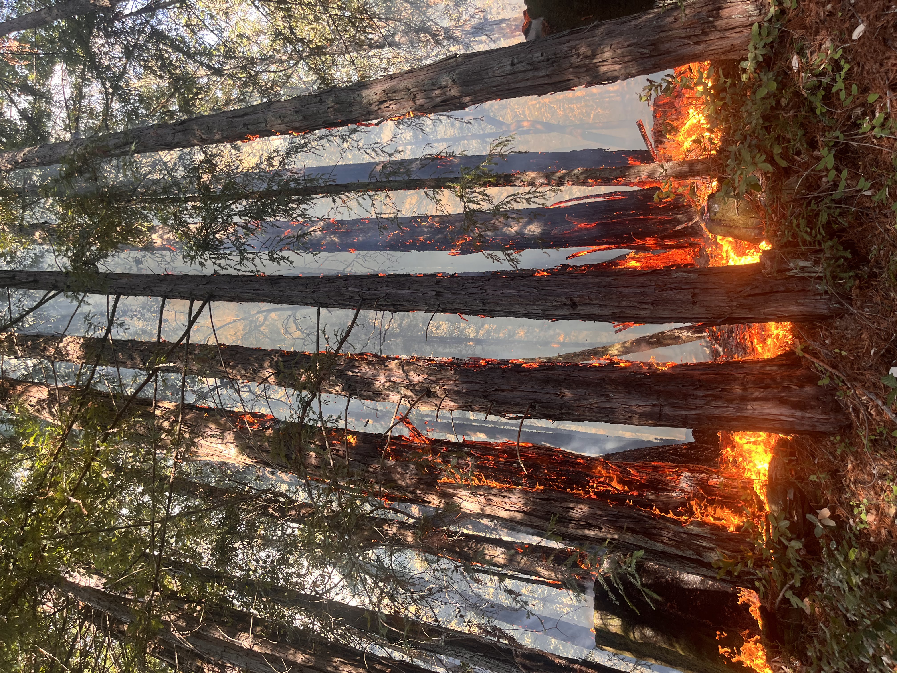

Wildfire: How to Get Involved and Resources
They look scary, and can be scary. But anyone can take action: read on to learn about prescribed burning and other resources.
What is Prescribed Burning?
Prescribed (RX) burning is the practice of intentionally setting a controlled fire in a region. RX burns serve many purposes, most often they are used for ecological restoration, invasive plant management, agriculture, and wildfire preparation/prevention. RX burning is practiced across the world in countless cultures, and serves a critical role in maintaining a healthy forest. Burns require various expertise and effort to maintain safety and control of the fire.

Broadcast burn in Santa Cruz

Burn with your bros!
How can I volunteer for prescribed burning?
Please note that my experience is heavily based on California, US practices. Different regions/countries may have different regulations and laws.
RX burning is practiced by groups of varying size, from local groups (e.g. Cal PBAs) to state (e.g. CAL FIRE) to federal level (e.g. USFS). The most accessible to regular citizens are local groups, often dubbed as "Prescribed Burning Associations" aka "PBA". In CA, I refer anyone to check out the California PBA to find local burning groups. Some communicate via email lists while others use social media.
A Note on Certifications: most if not all organizations will require you to be Firefighter Type 2 (FFT2) Qualified or Certified in order to participate on burns. (But, never say never; I have seen people without certifications shadow burns with the permission of the organizers/burn boss. If you are interested, please ask.)
A FFT2 is a certification issued by the NWCG that certifies you as a firefighter. The Firefighter Type 2 (FFT2) serves on a hand crew, engine crew, or helitack crew, performing fire suppression and fuels management duties in adverse climate, fuel, and terrain conditions. The FFT2 has no supervisory responsibilities and is supervised by the Firefighter Type 1 (FFT1) or a Single Resource Boss. See the official NWCG FFT2 webpage here. It requires the following:
- ICS-100: Intro to ICS (free online course)
- L-180: Human Factors in the Wildland Fire Service (free online course)
- IS-700: NIMS: An Introduction (free online course)
- S-190: Intro to Wildland Behavior (free online course)
- S-130: Firefighter Training (requires an in-person component and must be refreshed annually via the RT130. I had to pay for my class, but if you are lucky, there can be free community offerings. Or, you can become employed by a fire agency and recieve your training for free via the organization.)
- Work Capacity Test (Arduous): 3 mile hike with 45 lbs in 45 minutes or less.
Qualified VS. Certified: FFT2 qualification and certification and nearly identical, except that certification is when you recieve an official Incident Qualification Card, otherwise nicknamed the "Red Card". This card can only be issued by official fire agencies. Therefore, many burners do not have the actual certification, but are still fully qualified and meet the exact same standards as an agency firefighter.
What else can I do?
There are countless ways to be part of the wildfire movement. Here are some topics and resources for your reading enjoyment.
Support Wildland Firefighters
- Grassroots Wildland Firefighters: addressing the pay disparity for firefighters
- Wildland Firefighter Foundation: help families of firefighters killed or injured on line of duty
- CAL FIRE Benevolent Foundation: support families and honor fallen firefighters
Wildfire Tracking and Incident Updates
- NASA Active Fire Data Map (FIRMS): see latest satellite fire detections on US and global scale
- ALERTCalifornia Camera System: track wildfires via a camera system used by CAL FIRE
- NIFC National Incident Situation ArcGIS Map: map of active incidents along with information from the NIFC situational report (includes prepardeness level, containment information, etc)
- Latest NIFC Incident Management Situation Report: tracking national fire activity and preparedness status, along with committed CIMTs/IMTS/NIMOs
Becoming a Wildland Firefighter
- wildlandfire101.com:one of my favorite firefighter blogs and guides
- WildFire Subreddit:get your questions and direct advice here (see their pinned post titled "How to Get a Job as a Wildland Firefighter")
Podcasts/News
About my work in fire
Burning Experience
- Active red card holder (FFT2 certified)
- Current firefighter with USFS Deschutes Region 6
- Active volunteer with CCPBA and Good Fire Alliance: 10+ burns
- Previous youth volunteer with CAL FIRE CZU unit
Technical Experience
- Contributer to NASA's Fire Perimeter project at Goddard, FEDS (see resume)
- Active development of benchmarking tool for NASA FEDS in order to identify gaps between aircraft detected perimeters and satellite estimated perimeters. Continuing research on potential correlations between fuel type and area difference.
- Previous research experience using MASTER aircraft thermal detections and VIIRS/GOES satellite thermal detections
- Previous research apprentice under Professor Gollner at UC Berkeley Fire Lab, applied GIS + coding for automating calculations and contributing to WUI damage risk research
- Stipend awarded research project quantifying language disparity for wildfire prepardeness resources
I am always learning and grateful to those who have mentored me in my journey thus far.
Burn Gallery

Burn with CCPBA in Mt Madonna, CA

Pile burn in preparation for a broadcast burn

S130 Training Burn

Sequoias